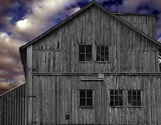

Experience the Haunted Barn
Enter if you dare! Our Haunted Barn is filled with spooky surprises, creepy sounds, and eerie sights that will give you chills. Perfect for those who love a good scare, our Haunted Barn is a must-visit this Halloween season.
Open from October 1 through October 31, the Haunted Barn offers thrills and scares for teens and adults. Younger children may find it too intense, so parental discretion is advised.
After braving the Haunted Barn, warm up by the bonfire with hot cocoa and s'mores available for purchase. The Haunted Barn experience is one you won't forget!